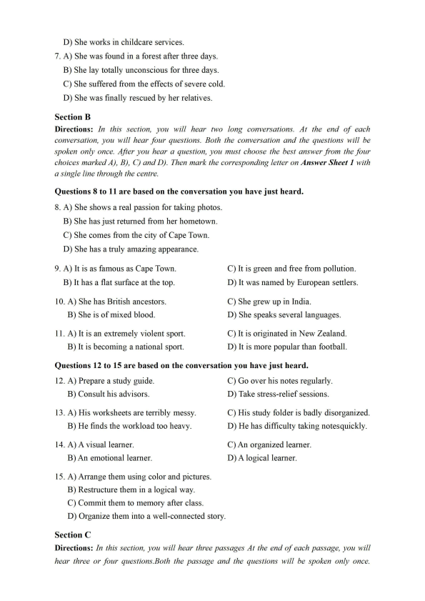
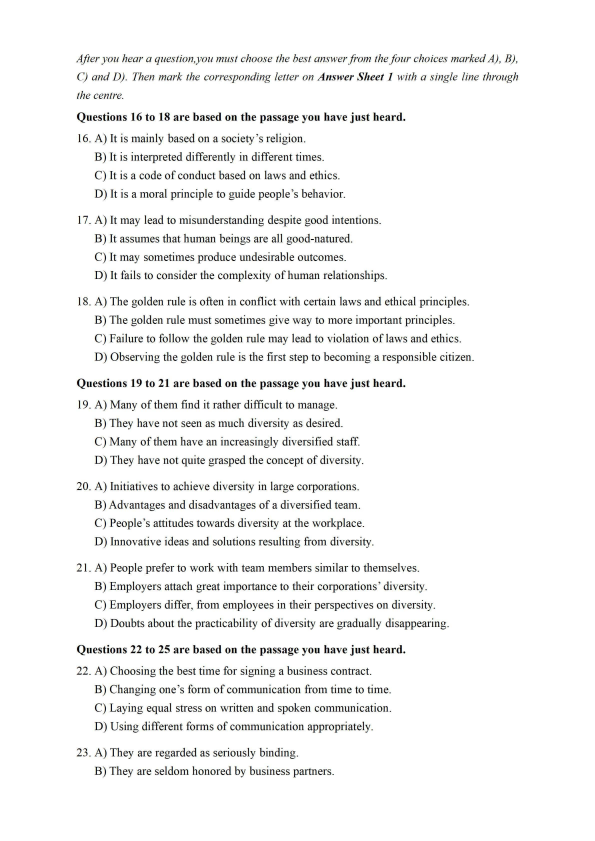
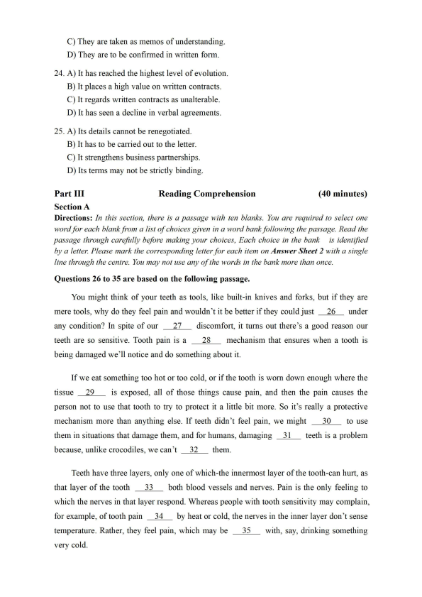
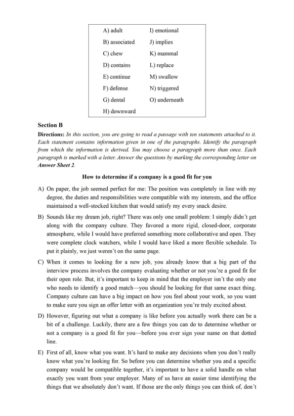
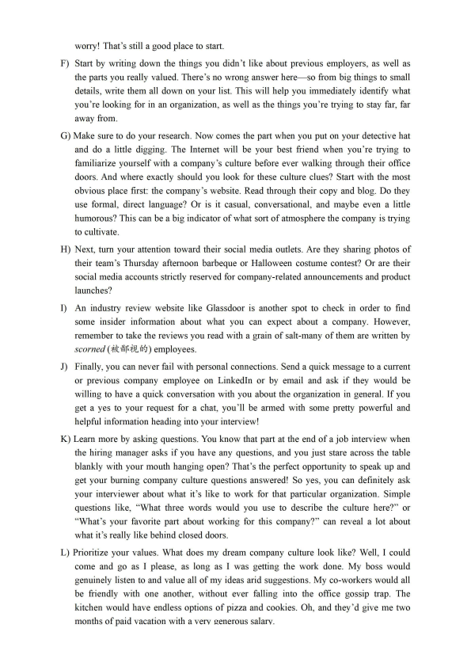
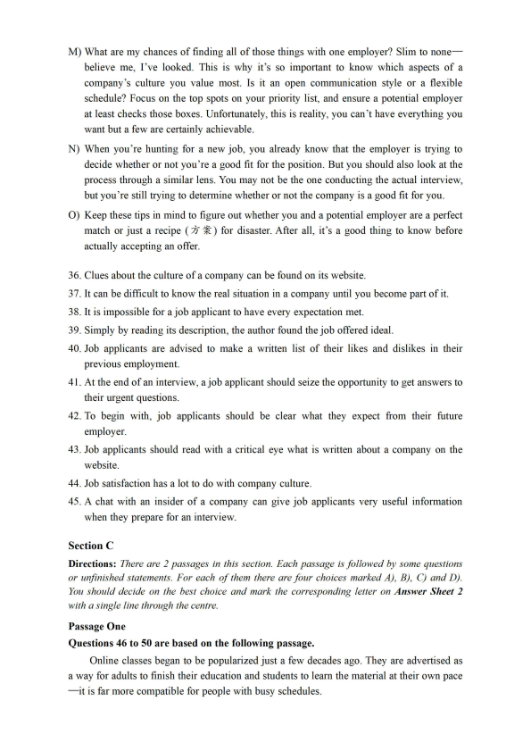
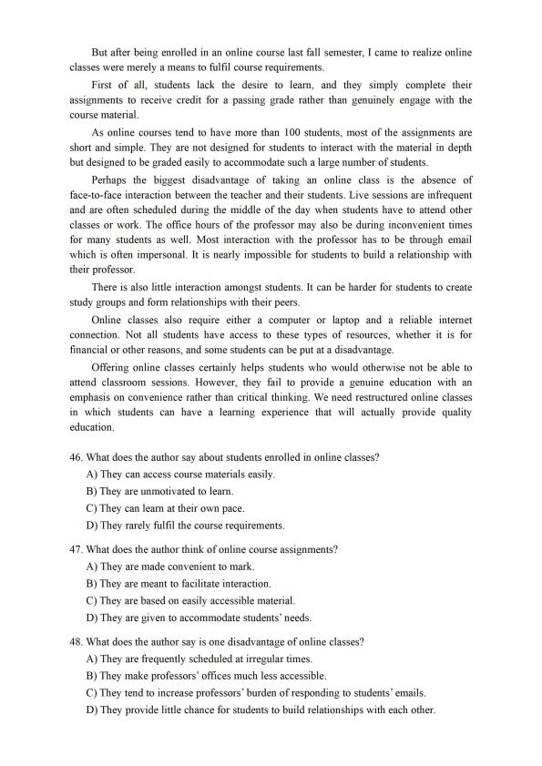
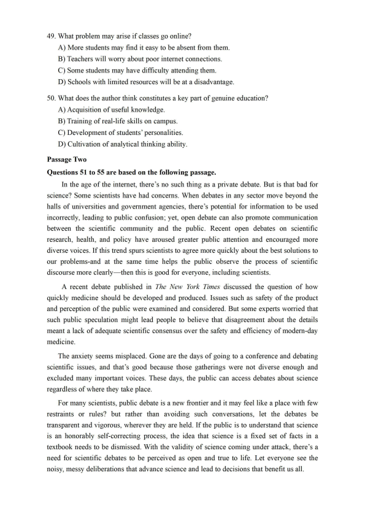
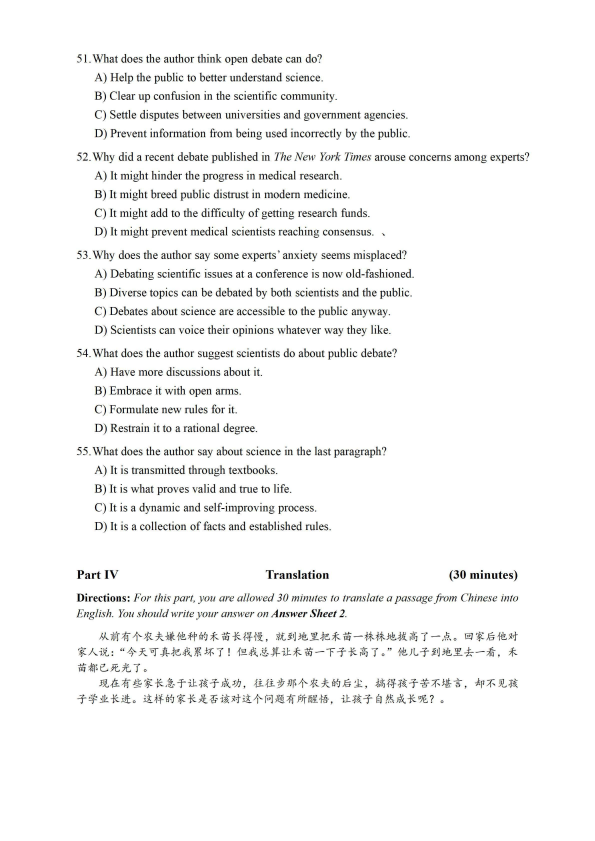

第 1 / 10 页

2022年06 月大学英语四级考试真题(第1 套)
Part I
Writing
(30minutes)
Directions: Suppose you are going to write a proposal to your school library for improving its
service. You are to write about its current problems and possible solutions to these problems.
You will have 30 minutes to write the proposal. You should write at least 120 words but no more
than 180 words.
Part II
Listening Comprehension
(25 minutes)
Section A
Directions: In this section, you will hear three ne^s reports. At the end o f each news report,
you will hear two or three questions. Both the news report and the questions will be spoken only
once. After you hear a question, you must choose the best answer from the four choices marked
A), B), C) and D). Then mark the corresponding letter on Answer Sheet 1 with a single line
through the centre.
Questions 1 and 2 are based on the news report you have just heard.
1. A) It studied the effects of exercise on sleep.
B) Its participants came from various walks of life.
C) Its findings confirmed those of previous studies.
D) It ran for as long as some thirty years.
2. A) Eating more vegetables instead of meats.
B) Drinking water instead of beverages with added sugar.
C) Consuming more energy drinks and sports drinks.
D) Forming the habit of exercising regularly.
Questions 3 and 4 are based on the news report you have just heard.
3. A) He asked them about his lost paintings.
B) He knew the owner of two missing paintings.
C) He left his paintings at a highway rest stop.
D) He found two 17th-century oil paintings.
4. A) They are imitations.
C) They were stolen by an Italian boy.
B) They are originals.
D) They came from the same artist.
Questions 5 to 7 are based on the news report you have just heard.
5. A) Look after her grandfather.
C) Save her sick grandmother.
B) Leave the remote cold region.
D) Flee from the threat of bears.
6. A) She has to face a criminal charge.
B) She was found lying motionless in the snow.
C) She searched for her daughter in freezing cold.
查看 / 复制本页文字
2022年06 月大学英语四级考试真题(第1 套) Part I Writing (30minutes) Directions: Suppose you are going to write a proposal to your school library for improving its service. You are to write about its current problems and possible solutions to these problems. You will have 30 minutes to write the proposal. You should write at least 120 words but no more than 180 words. Part II Listening Comprehension (25 minutes) Section A Directions: In this section, you will hear three ne^s reports. At the end o f each news report, you will hear two or three questions. Both the news report and the questions will be spoken only once. After you hear a question, you must choose the best answer from the four choices marked A), B), C) and D). Then mark the corresponding letter on Answer Sheet 1 with a single line through the centre. Questions 1 and 2 are based on the news report you have just heard. 1. A) It studied the effects of exercise on sleep. B) Its participants came from various walks of life. C) Its findings confirmed those of previous studies. D) It ran for as long as some thirty years. 2. A) Eating more vegetables instead of meats. B) Drinking water instead of beverages with added sugar. C) Consuming more energy drinks and sports drinks. D) Forming the habit of exercising regularly. Questions 3 and 4 are based on the news report you have just heard. 3. A) He asked them about his lost paintings. B) He knew the owner of two missing paintings. C) He left his paintings at a highway rest stop. D) He found two 17th-century oil paintings. 4. A) They are imitations. C) They were stolen by an Italian boy. B) They are originals. D) They came from the same artist. Questions 5 to 7 are based on the news report you have just heard. 5. A) Look after her grandfather. C) Save her sick grandmother. B) Leave the remote cold region. D) Flee from the threat of bears. 6. A) She has to face a criminal charge. B) She was found lying motionless in the snow. C) She searched for her daughter in freezing cold.
第 2 / 10 页

D) She works in childcare services.
7. A) She was found in a forest after three days.
B) She lay totally unconscious for three days.
C) She suffered from the effects of severe cold.
D) She was finally rescued by her relatives.
Section B
Directions: In this section, you will hear two long conversations. At the end o f each
conversation, you will hear four questions. Both the conversation and the questions will be
spoken only once. After you hear a question, you must choose the best answer from the four
choices marked A), B), C) and D). Then mark the corresponding letter on Answer Sheet 1 with
a single line through the centre.
Questions 8 to 11 are based on the conversation you have just heard.
8. A) She shows a real passion for taking photos.
B) She has just returned from her hometown.
C) She comes from the city of Cape Town.
D) She has a truly amazing appearance.
9. A) It is as famous as Cape Town.
B) It has a flat surface at the top.
10. A) She has British ancestors.
B) She is of mixed blood.
11. A) It is an extremely violent sport.
B) It is becoming a national sport.
C) It is green and free from pollution.
D) It was named by European settlers.
C) She grew up in India.
D) She speaks several languages.
C) It is originated in New Zealand.
D) It is more popular than football.
Questions 12 to 15 are based on the conversation you have just heard.
12. A) Prepare a study guide.
B) Consult his advisors.
13. A) His worksheets are terribly messy.
B) He finds the workload too heavy.
14. A) A visual learner.
B) An emotional learner.
C) Go over his notes regularly.
D) Take stress-relief sessions.
C) His study folder is badly disorganized.
D) He has difficulty taking notes quickly.
C) An organized learner.
D) A logical learner.
15. A) Arrange them using color and pictures.
B) Restructure them in a logical way.
C) Commit them to memory after class.
D) Organize them into a well-connected story.
Section C
Directions: In this section, you will hear three passages At the end o f each passage, you will
hear three or four questions.Both the passage and the questions will be spoken only once.
查看 / 复制本页文字
D) She works in childcare services. 7. A) She was found in a forest after three days. B) She lay totally unconscious for three days. C) She suffered from the effects of severe cold. D) She was finally rescued by her relatives. Section B Directions: In this section, you will hear two long conversations. At the end o f each conversation, you will hear four questions. Both the conversation and the questions will be spoken only once. After you hear a question, you must choose the best answer from the four choices marked A), B), C) and D). Then mark the corresponding letter on Answer Sheet 1 with a single line through the centre. Questions 8 to 11 are based on the conversation you have just heard. 8. A) She shows a real passion for taking photos. B) She has just returned from her hometown. C) She comes from the city of Cape Town. D) She has a truly amazing appearance. 9. A) It is as famous as Cape Town. B) It has a flat surface at the top. 10. A) She has British ancestors. B) She is of mixed blood. 11. A) It is an extremely violent sport. B) It is becoming a national sport. C) It is green and free from pollution. D) It was named by European settlers. C) She grew up in India. D) She speaks several languages. C) It is originated in New Zealand. D) It is more popular than football. Questions 12 to 15 are based on the conversation you have just heard. 12. A) Prepare a study guide. B) Consult his advisors. 13. A) His worksheets are terribly messy. B) He finds the workload too heavy. 14. A) A visual learner. B) An emotional learner. C) Go over his notes regularly. D) Take stress-relief sessions. C) His study folder is badly disorganized. D) He has difficulty taking notes quickly. C) An organized learner. D) A logical learner. 15. A) Arrange them using color and pictures. B) Restructure them in a logical way. C) Commit them to memory after class. D) Organize them into a well-connected story. Section C Directions: In this section, you will hear three passages At the end o f each passage, you will hear three or four questions.Both the passage and the questions will be spoken only once.
第 3 / 10 页

After you hear a question,you must choose the best answer from the four choices marked A), B),
C) and D). Then mark the corresponding letter on Answer Sheet 1 with a single line through
the centre.
Questions 16 to 18 are based on the passage you have just heard.
16. A) It is mainly based on a society's religion.
B) It is interpreted differently in different times.
C) It is a code of conduct based on laws and ethics.
D) It is a moral principle to guide people's behavior.
17. A) It may lead to misunderstanding despite good intentions.
B) It assumes that human beings are all good-natured.
C) It may sometimes produce undesirable outcomes.
D) It fails to consider the complexity of human relationships.
18. A) The golden rule is often in conflict with certain laws and ethical principles.
B) The golden rule must sometimes give way to more important principles.
C) Failure to follow the golden rule may lead to violation of laws and ethics.
D) Observing the golden rule is the first step to becoming a responsible citizen.
Questions 19 to 21 are based on the passage you have just heard.
19. A) Many of them find it rather difficult to manage.
B) They have not seen as much diversity as desired.
C) Many of them have an increasingly diversified staff.
D) They have not quite grasped the concept of diversity.
20. A) Initiatives to achieve diversity in large corporations.
B) Advantages and disadvantages of a diversified team.
C) People's attitudes towards diversity at the workplace.
D) Innovative ideas and solutions resulting from diversity.
21. A) People prefer to work with team members similar to themselves.
B) Employers attach great importance to their corporations9 diversity.
C) Employers differ, from employees in their perspectives on diversity.
D) Doubts about the practicability of diversity are gradually disappearing.
Questions 22 to 25 are based on the passage you have just heard.
22. A) Choosing the best time for signing a business contract.
B) Changing one's form of communication from time to time.
C) Laying equal stress on written and spoken communication.
D) Using different forms of communication appropriately.
23. A) They are regarded as seriously binding.
B) They are seldom honored by business partners.
查看 / 复制本页文字
After you hear a question,you must choose the best answer from the four choices marked A), B), C) and D). Then mark the corresponding letter on Answer Sheet 1 with a single line through the centre. Questions 16 to 18 are based on the passage you have just heard. 16. A) It is mainly based on a society's religion. B) It is interpreted differently in different times. C) It is a code of conduct based on laws and ethics. D) It is a moral principle to guide people's behavior. 17. A) It may lead to misunderstanding despite good intentions. B) It assumes that human beings are all good-natured. C) It may sometimes produce undesirable outcomes. D) It fails to consider the complexity of human relationships. 18. A) The golden rule is often in conflict with certain laws and ethical principles. B) The golden rule must sometimes give way to more important principles. C) Failure to follow the golden rule may lead to violation of laws and ethics. D) Observing the golden rule is the first step to becoming a responsible citizen. Questions 19 to 21 are based on the passage you have just heard. 19. A) Many of them find it rather difficult to manage. B) They have not seen as much diversity as desired. C) Many of them have an increasingly diversified staff. D) They have not quite grasped the concept of diversity. 20. A) Initiatives to achieve diversity in large corporations. B) Advantages and disadvantages of a diversified team. C) People's attitudes towards diversity at the workplace. D) Innovative ideas and solutions resulting from diversity. 21. A) People prefer to work with team members similar to themselves. B) Employers attach great importance to their corporations9 diversity. C) Employers differ, from employees in their perspectives on diversity. D) Doubts about the practicability of diversity are gradually disappearing. Questions 22 to 25 are based on the passage you have just heard. 22. A) Choosing the best time for signing a business contract. B) Changing one's form of communication from time to time. C) Laying equal stress on written and spoken communication. D) Using different forms of communication appropriately. 23. A) They are regarded as seriously binding. B) They are seldom honored by business partners.
第 4 / 10 页

C) They are taken as memos of understanding.
D) They are to be confirmed in written form.
24. A) It has reached the highest level of evolution.
B) It places a high value on written contracts.
C) It regards written contracts as unalterable.
D) It has seen a decline in verbal agreements.
25. A) Its details cannot be renegotiated.
B) It has to be carried out to the letter.
C) It strengthens business partnerships.
D) Its terms may not be strictly binding.
Part III
Reading Comprehension
(40 minutes)
Section A
Directions: In this section, there is a passage with ten blanks. You are required to select one
word for each blank from a list o f choices given in a word bank following the passage. Read the
passage through carefully before making your choices, Each choice in the bank
is identified
by a letter. Please mark the corresponding letter for each item on Answer Sheet 2 with a single
line through the centre. You may not use any o f the words in the bank more than once.
Questions 26 to 35 are based on the following passage.
You might think of your teeth as tools, like built-in knives and forks, but if they are
mere tools, why do they feel pain and wouldn't it be better if they could just
26
under
any condition? In spite of our
27
discomfort, it turns out there's a good reason our
teeth are so sensitive. Tooth pain is a
28
mechanism that ensures when a tooth is
being damaged we'll notice and do something about it.
If we eat something too hot or too cold, or if the tooth is worn down enough where the
tissue
29
is exposed, all of those things cause pain, and then the pain causes the
person not to use that tooth to try to protect it a little bit more. So it's really a protective
mechanism more than anything else. If teeth didn't feel pain, we might
30
to use
them in situations that damage them, and for humans, damaging
31
teeth is a problem
because, unlike crocodiles, we can't
32
them.
Teeth have three layers, only one of which-the innermost layer of the tooth-can hurt, as
that layer of the tooth
33
both blood vessels and nerves. Pain is the only feeling to
which the nerves in that layer respond. Whereas people with tooth sensitivity may complain,
for example, of tooth pain
34
by heat or cold, the nerves in the inner layer don't sense
temperature. Rather, they feel pain, which may be
35
with, say, drinking something
very cold.
查看 / 复制本页文字
C) They are taken as memos of understanding. D) They are to be confirmed in written form. 24. A) It has reached the highest level of evolution. B) It places a high value on written contracts. C) It regards written contracts as unalterable. D) It has seen a decline in verbal agreements. 25. A) Its details cannot be renegotiated. B) It has to be carried out to the letter. C) It strengthens business partnerships. D) Its terms may not be strictly binding. Part III Reading Comprehension (40 minutes) Section A Directions: In this section, there is a passage with ten blanks. You are required to select one word for each blank from a list o f choices given in a word bank following the passage. Read the passage through carefully before making your choices, Each choice in the bank is identified by a letter. Please mark the corresponding letter for each item on Answer Sheet 2 with a single line through the centre. You may not use any o f the words in the bank more than once. Questions 26 to 35 are based on the following passage. You might think of your teeth as tools, like built-in knives and forks, but if they are mere tools, why do they feel pain and wouldn't it be better if they could just 26 under any condition? In spite of our 27 discomfort, it turns out there's a good reason our teeth are so sensitive. Tooth pain is a 28 mechanism that ensures when a tooth is being damaged we'll notice and do something about it. If we eat something too hot or too cold, or if the tooth is worn down enough where the tissue 29 is exposed, all of those things cause pain, and then the pain causes the person not to use that tooth to try to protect it a little bit more. So it's really a protective mechanism more than anything else. If teeth didn't feel pain, we might 30 to use them in situations that damage them, and for humans, damaging 31 teeth is a problem because, unlike crocodiles, we can't 32 them. Teeth have three layers, only one of which-the innermost layer of the tooth-can hurt, as that layer of the tooth 33 both blood vessels and nerves. Pain is the only feeling to which the nerves in that layer respond. Whereas people with tooth sensitivity may complain, for example, of tooth pain 34 by heat or cold, the nerves in the inner layer don't sense temperature. Rather, they feel pain, which may be 35 with, say, drinking something very cold.
第 5 / 10 页

A) adult
I) emotional
B) associated
J) implies
C)chew
K) mammal
D) contains
L)replace
E) continue
M) swallow
F) defense
N) triggered
G) dental
0) underneath
H) downward
Section B
Directions: In this section, you are going to read a passage with ten statements attached to it.
Each statement contains information given in one o f the paragraphs. Identify the paragraph
from which the information is derived. You may choose a paragraph more than once. Each
paragraph is marked with a letter. Answer the questions by marking the corresponding letter on
Answer Sheet 2.
How to determine if a company is a good fit for you
A) On paper, the job seemed perfect for me: The position was completely in line with my
degree, the duties and responsibilities were compatible with my interests, and the office
maintained a well-stocked kitchen that would satisfy my every snack desire.
B) Sounds like my dream job, right? There was only one small problem: I simply didn't get
along with the company culture. They favored a more rigid, closed-door, corporate
atmosphere, while I would have preferred something more collaborative and open. They
were complete clock watchers, while I would have liked a more flexible schedule. To
put it plainly, we just weren,t on the same page.
C) When it comes to looking for a new job, you already know that a big part of the
interview process involves the company evaluating whether or not you're a good fit for
their open role. But, it's important to keep in mind that the employer isn't the only one
who needs to identify a good match- you should be looking for that same exact thing.
Company culture can have a big impact on how you feel about your work, so you want
to make sure you sign an offer letter with an organization you're truly excited about.
D) However, figuring out what a company is like before you actually work there can be a
bit of a challenge. Luckily, there are a few things you can do to determine whether or
not a company is a good fit for you- before you ever sign your name on that dotted
line.
E) First of all, know what you want. It's hard to make any decisions when you don't really
know what you're looking for. So before you can determine whether you and a specific
company would be compatible together, it's important to have a solid handle on what
exactly you want from your employer. Many of us have an easier time identifying the
things that we absolutely don't want. If those are the only things you can think of, don't
查看 / 复制本页文字
A) adult I) emotional B) associated J) implies C)chew K) mammal D) contains L)replace E) continue M) swallow F) defense N) triggered G) dental 0) underneath H) downward Section B Directions: In this section, you are going to read a passage with ten statements attached to it. Each statement contains information given in one o f the paragraphs. Identify the paragraph from which the information is derived. You may choose a paragraph more than once. Each paragraph is marked with a letter. Answer the questions by marking the corresponding letter on Answer Sheet 2. How to determine if a company is a good fit for you A) On paper, the job seemed perfect for me: The position was completely in line with my degree, the duties and responsibilities were compatible with my interests, and the office maintained a well-stocked kitchen that would satisfy my every snack desire. B) Sounds like my dream job, right? There was only one small problem: I simply didn't get along with the company culture. They favored a more rigid, closed-door, corporate atmosphere, while I would have preferred something more collaborative and open. They were complete clock watchers, while I would have liked a more flexible schedule. To put it plainly, we just weren,t on the same page. C) When it comes to looking for a new job, you already know that a big part of the interview process involves the company evaluating whether or not you're a good fit for their open role. But, it's important to keep in mind that the employer isn't the only one who needs to identify a good match- you should be looking for that same exact thing. Company culture can have a big impact on how you feel about your work, so you want to make sure you sign an offer letter with an organization you're truly excited about. D) However, figuring out what a company is like before you actually work there can be a bit of a challenge. Luckily, there are a few things you can do to determine whether or not a company is a good fit for you- before you ever sign your name on that dotted line. E) First of all, know what you want. It's hard to make any decisions when you don't really know what you're looking for. So before you can determine whether you and a specific company would be compatible together, it's important to have a solid handle on what exactly you want from your employer. Many of us have an easier time identifying the things that we absolutely don't want. If those are the only things you can think of, don't
第 6 / 10 页

worry! That's still a good place to start.
F) Start by writing down the things you didn't like about previous employers, as well as
the parts you really valued. There 9s no wrong answer here一so from big things to small
details, write them all down on your list. This will help you immediately identify what
you're looking for in an organization, as well as the things you're trying to stay far, far
away from.
G) Make sure to do your research. Now comes the part when you put on your detective hat
and do a little digging. The Internet will be your best friend when you're trying to
familiarize yourself with a company's culture before ever walking through their office
doors. And where exactly should you look for these culture clues? Start with the most
obvious place first: the company's website. Read through their copy and blog. Do they
use formal, direct language? Or is it casual, conversational, and maybe even a little
humorous? This can be a big indicator of what sort of atmosphere the company is trying
to cultivate.
H) Next, turn your attention toward their social media outlets. Are they sharing photos of
their team's Thursday afternoon barbeque or Halloween costume contest? Or are their
social media accounts strictly reserved for company-related announcements and product
launches?
I) An industry review website like Glassdoor is another spot to check in order to find
some insider information about what you can expect about a company. However,
remember to take the reviews you read with a grain of salt-many of them are written by
scorned (被啬口视的)employees.
J) Finally, you can never fail with personal connections. Send a quick message to a current
or previous company employee on Linkedln or by email and ask if they would be
willing to have a quick conversation with you about the organization in general. If you
get a yes to your request for a chat, you911 be armed with some pretty powerful and
helpful information heading into your interview!
K) Learn more by asking questions. You know that part at the end of a job interview when
the hiring manager asks if you have any questions, and you just stare across the table
blankly with your mouth hanging open? That's the perfect opportunity to speak up and
get your burning company culture questions answered! So yes, you can definitely ask
your interviewer about what it's like to work for that particular organization. Simple
questions like, “What three words would you use to describe the culture here?” or
“What's your favorite part about working for this company?can reveal a lot about
what it's really like behind closed doors.
L) Prioritize your values. What does my dream company culture look like? Well, I could
come and go as I please, as long as I was getting the work done. My boss would
genuinely listen to and value all of my ideas arid suggestions. My co-workers would all
be friendly with one another, without ever falling into the office gossip trap. The
kitchen would have endless options of pizza and cookies. Oh, and they'd give me two
months of paid vacation with a very generous salary.
查看 / 复制本页文字
worry! That's still a good place to start. F) Start by writing down the things you didn't like about previous employers, as well as the parts you really valued. There 9s no wrong answer here一so from big things to small details, write them all down on your list. This will help you immediately identify what you're looking for in an organization, as well as the things you're trying to stay far, far away from. G) Make sure to do your research. Now comes the part when you put on your detective hat and do a little digging. The Internet will be your best friend when you're trying to familiarize yourself with a company's culture before ever walking through their office doors. And where exactly should you look for these culture clues? Start with the most obvious place first: the company's website. Read through their copy and blog. Do they use formal, direct language? Or is it casual, conversational, and maybe even a little humorous? This can be a big indicator of what sort of atmosphere the company is trying to cultivate. H) Next, turn your attention toward their social media outlets. Are they sharing photos of their team's Thursday afternoon barbeque or Halloween costume contest? Or are their social media accounts strictly reserved for company-related announcements and product launches? I) An industry review website like Glassdoor is another spot to check in order to find some insider information about what you can expect about a company. However, remember to take the reviews you read with a grain of salt-many of them are written by scorned (被啬口视的)employees. J) Finally, you can never fail with personal connections. Send a quick message to a current or previous company employee on Linkedln or by email and ask if they would be willing to have a quick conversation with you about the organization in general. If you get a yes to your request for a chat, you911 be armed with some pretty powerful and helpful information heading into your interview! K) Learn more by asking questions. You know that part at the end of a job interview when the hiring manager asks if you have any questions, and you just stare across the table blankly with your mouth hanging open? That's the perfect opportunity to speak up and get your burning company culture questions answered! So yes, you can definitely ask your interviewer about what it's like to work for that particular organization. Simple questions like, “What three words would you use to describe the culture here?” or “What's your favorite part about working for this company?can reveal a lot about what it's really like behind closed doors. L) Prioritize your values. What does my dream company culture look like? Well, I could come and go as I please, as long as I was getting the work done. My boss would genuinely listen to and value all of my ideas arid suggestions. My co-workers would all be friendly with one another, without ever falling into the office gossip trap. The kitchen would have endless options of pizza and cookies. Oh, and they'd give me two months of paid vacation with a very generous salary.
第 7 / 10 页

M) What are my chances of finding all of those things with one employer? Slim to none—
believe me, I've looked. This is why it's so important to know which aspects of a
company's culture you value most. Is it an open communication style or a flexible
schedule? Focus on the top spots on your priority list, and ensure a potential employer
at least checks those boxes. Unfortunately, this is reality, you can,t have everything you
want but a few are certainly achievable.
N) When you're hunting for a new job, you already know that the employer is trying to
decide whether or not you're a good fit for the position. But you should also look at the
process through a similar lens. You may not be the one conducting the actual interview,
but you're still trying to determine whether or not the company is a good fit for you.
O) Keep these tips in mind to figure out whether you and a potential employer are a perfect
match or just a recipe (方案)for disaster. After all, it's a good thing to know before
actually accepting an offer.
36. Clues about the culture of a company can be found on its website.
37. It can be difficult to know the real situation in a company until you become part of it.
38. It is impossible for a job applicant to have every expectation met.
39. Simply by reading its description, the author found the job offered ideal.
40. Job applicants are advised to make a written list of their likes and dislikes in their
previous employment.
41. At the end of an interview, a job applicant should seize the opportunity to get answers to
their urgent questions.
42. To begin with, job applicants should be clear what they expect from their future
employer.
43. Job applicants should read with a critical eye what is written about a company on the
website.
44. Job satisfaction has a lot to do with company culture.
45. A chat with an insider of a company can give job applicants very useful information
when they prepare for an interview.
Section C
Directions: There are 2 passages in this section. Each passage is followed by some questions
or unfinished statements. For each of them there are four choices marked A), B), C) and D).
You should decide on the best choice and mark the corresponding letter on Answer Sheet 2
with a single line through the centre.
Passage One
Questions 46 to 50 are based on the following passage.
Online classes began to be popularized just a few decades ago. They are advertised as
a way for adults to finish their education and students to learn the material at their own pace
—it is far more compatible for people with busy schedules.
查看 / 复制本页文字
M) What are my chances of finding all of those things with one employer? Slim to none— believe me, I've looked. This is why it's so important to know which aspects of a company's culture you value most. Is it an open communication style or a flexible schedule? Focus on the top spots on your priority list, and ensure a potential employer at least checks those boxes. Unfortunately, this is reality, you can,t have everything you want but a few are certainly achievable. N) When you're hunting for a new job, you already know that the employer is trying to decide whether or not you're a good fit for the position. But you should also look at the process through a similar lens. You may not be the one conducting the actual interview, but you're still trying to determine whether or not the company is a good fit for you. O) Keep these tips in mind to figure out whether you and a potential employer are a perfect match or just a recipe (方案)for disaster. After all, it's a good thing to know before actually accepting an offer. 36. Clues about the culture of a company can be found on its website. 37. It can be difficult to know the real situation in a company until you become part of it. 38. It is impossible for a job applicant to have every expectation met. 39. Simply by reading its description, the author found the job offered ideal. 40. Job applicants are advised to make a written list of their likes and dislikes in their previous employment. 41. At the end of an interview, a job applicant should seize the opportunity to get answers to their urgent questions. 42. To begin with, job applicants should be clear what they expect from their future employer. 43. Job applicants should read with a critical eye what is written about a company on the website. 44. Job satisfaction has a lot to do with company culture. 45. A chat with an insider of a company can give job applicants very useful information when they prepare for an interview. Section C Directions: There are 2 passages in this section. Each passage is followed by some questions or unfinished statements. For each of them there are four choices marked A), B), C) and D). You should decide on the best choice and mark the corresponding letter on Answer Sheet 2 with a single line through the centre. Passage One Questions 46 to 50 are based on the following passage. Online classes began to be popularized just a few decades ago. They are advertised as a way for adults to finish their education and students to learn the material at their own pace —it is far more compatible for people with busy schedules.
第 8 / 10 页

But after being enrolled in an online course last fall semester, I came to realize online
classes were merely a means to fulfil course requirements.
First of all, students lack the desire to learn, and they simply complete their
assignments to receive credit for a passing grade rather than genuinely engage with the
course material.
As online courses tend to have more than 100 students, most of the assignments are
short and simple. They are not designed for students to interact with the material in depth
but designed to be graded easily to accommodate such a large number of students.
Perhaps the biggest disadvantage of taking an online class is the absence of
face-to-face interaction between the teacher and their students. Live sessions are infrequent
and are often scheduled during the middle of the day when students have to attend other
classes or work. The office hours of the professor may also be during inconvenient times
for many students as well. Most interaction with the professor has to be through email
which is often impersonal. It is nearly impossible for students to build a relationship with
their professor.
There is also little interaction amongst students. It can be harder for students to create
study groups and form relationships with their peers.
Online classes also require either a computer or laptop and a reliable internet
connection. Not all students have access to these types of resources, whether it is for
financial or other reasons, and some students can be put at a disadvantage.
Offering online classes certainly helps students who would otherwise not be able to
attend classroom sessions. However, they fail to provide a genuine education with an
emphasis on convenience rather than critical thinking. We need restructured online classes
in which students can have a learning experience that will actually provide quality
education.
46. What does the author say about students enrolled in online classes?
A) They can access course materials easily.
B) They are unmotivated to learn.
C) They can learn at their own pace.
D) They rarely fulfil the course requirements.
47. What does the author think of online course assignments?
A) They are made convenient to mark.
B) They are meant to facilitate interaction.
C) They are based on easily accessible material.
D) They are given to accommodate students9 needs.
48. What does the author say is one disadvantage of online classes?
A) They are frequently scheduled at irregular times.
B) They make professors9 offices much less accessible.
C) They tend to increase professors9 burden of responding to students9 emails.
D) They provide little chance for students to build relationships with each other.
查看 / 复制本页文字
But after being enrolled in an online course last fall semester, I came to realize online classes were merely a means to fulfil course requirements. First of all, students lack the desire to learn, and they simply complete their assignments to receive credit for a passing grade rather than genuinely engage with the course material. As online courses tend to have more than 100 students, most of the assignments are short and simple. They are not designed for students to interact with the material in depth but designed to be graded easily to accommodate such a large number of students. Perhaps the biggest disadvantage of taking an online class is the absence of face-to-face interaction between the teacher and their students. Live sessions are infrequent and are often scheduled during the middle of the day when students have to attend other classes or work. The office hours of the professor may also be during inconvenient times for many students as well. Most interaction with the professor has to be through email which is often impersonal. It is nearly impossible for students to build a relationship with their professor. There is also little interaction amongst students. It can be harder for students to create study groups and form relationships with their peers. Online classes also require either a computer or laptop and a reliable internet connection. Not all students have access to these types of resources, whether it is for financial or other reasons, and some students can be put at a disadvantage. Offering online classes certainly helps students who would otherwise not be able to attend classroom sessions. However, they fail to provide a genuine education with an emphasis on convenience rather than critical thinking. We need restructured online classes in which students can have a learning experience that will actually provide quality education. 46. What does the author say about students enrolled in online classes? A) They can access course materials easily. B) They are unmotivated to learn. C) They can learn at their own pace. D) They rarely fulfil the course requirements. 47. What does the author think of online course assignments? A) They are made convenient to mark. B) They are meant to facilitate interaction. C) They are based on easily accessible material. D) They are given to accommodate students9 needs. 48. What does the author say is one disadvantage of online classes? A) They are frequently scheduled at irregular times. B) They make professors9 offices much less accessible. C) They tend to increase professors9 burden of responding to students9 emails. D) They provide little chance for students to build relationships with each other.
第 9 / 10 页

49. What problem may arise if classes go online?
A) More students may find it easy to be absent from them.
B) Teachers will worry about poor internet connections.
C) Some students may have difficulty attending them.
D) Schools with limited resources will be at a disadvantage.
50. What does the author think constitutes a key part of genuine education?
A) Acquisition of useful knowledge.
B) Training of real-life skills on campus.
C) Development of students9 personalities.
D) Cultivation of analytical thinking ability.
Passage Two
Questions 51 to 55 are based on the following passage.
In the age of the internet, there's no such thing as a private debate. But is that bad for
science? Some scientists have had concerns. When debates in any sector move beyond the
halls of universities and government agencies, there's potential for information to be used
incorrectly, leading to public confusion; yet, open debate can also promote communication
between the scientific community and the public. Recent open debates on scientific
research, health, and policy have aroused greater public attention and encouraged more
diverse voices. If this trend spurs scientists to agree more quickly about the best solutions to
our problems-and at the same time helps the public observe the process of scientific
discourse more clearly- then this is good for everyone, including scientists.
A recent debate published in The New York Times discussed the question of how
quickly medicine should be developed and produced. Issues such as safety of the product
and perception of the public were examined and considered. But some experts worried that
such public speculation might lead people to believe that disagreement about the details
meant a lack of adequate scientific consensus over the safety and efficiency of modern-day
medicine.
The anxiety seems misplaced. Gone are the days of going to a conference and debating
scientific issues, and that's good because those gatherings were not diverse enough and
excluded many important voices. These days, the public can access debates about science
regardless of where they take place.
For many scientists, public debate is a new frontier and it may feel like a place with few
restraints or rules? but rather than avoiding such conversations, let the debates be
transparent and vigorous, wherever they are held. If the public is to understand that science
is an honorably self-correcting process, the idea that science is a fixed set of facts in a
textbook needs to be dismissed. With the validity of science coming under attack, there's a
need for scientific debates to be perceived as open and true to life. Let everyone see the
noisy, messy deliberations that advance science and lead to decisions that benefit us all.
查看 / 复制本页文字
49. What problem may arise if classes go online? A) More students may find it easy to be absent from them. B) Teachers will worry about poor internet connections. C) Some students may have difficulty attending them. D) Schools with limited resources will be at a disadvantage. 50. What does the author think constitutes a key part of genuine education? A) Acquisition of useful knowledge. B) Training of real-life skills on campus. C) Development of students9 personalities. D) Cultivation of analytical thinking ability. Passage Two Questions 51 to 55 are based on the following passage. In the age of the internet, there's no such thing as a private debate. But is that bad for science? Some scientists have had concerns. When debates in any sector move beyond the halls of universities and government agencies, there's potential for information to be used incorrectly, leading to public confusion; yet, open debate can also promote communication between the scientific community and the public. Recent open debates on scientific research, health, and policy have aroused greater public attention and encouraged more diverse voices. If this trend spurs scientists to agree more quickly about the best solutions to our problems-and at the same time helps the public observe the process of scientific discourse more clearly- then this is good for everyone, including scientists. A recent debate published in The New York Times discussed the question of how quickly medicine should be developed and produced. Issues such as safety of the product and perception of the public were examined and considered. But some experts worried that such public speculation might lead people to believe that disagreement about the details meant a lack of adequate scientific consensus over the safety and efficiency of modern-day medicine. The anxiety seems misplaced. Gone are the days of going to a conference and debating scientific issues, and that's good because those gatherings were not diverse enough and excluded many important voices. These days, the public can access debates about science regardless of where they take place. For many scientists, public debate is a new frontier and it may feel like a place with few restraints or rules? but rather than avoiding such conversations, let the debates be transparent and vigorous, wherever they are held. If the public is to understand that science is an honorably self-correcting process, the idea that science is a fixed set of facts in a textbook needs to be dismissed. With the validity of science coming under attack, there's a need for scientific debates to be perceived as open and true to life. Let everyone see the noisy, messy deliberations that advance science and lead to decisions that benefit us all.
第 10 / 10 页

51. What does the author think open debate can do?
A) Help the public to better understand science.
B) Clear up confusion in the scientific community.
C) Settle disputes between universities and government agencies.
D) Prevent information from being used incorrectly by the public.
52. Why did a recent debate published in The New York Times arouse concerns among experts?
A) It might hinder the progress in medical research.
B) It might breed public distrust in modem medicine.
C) It might add to the difficulty of getting research funds.
D) It might prevent medical scientists reaching consensus.、
53. Why does the author say some experts5 anxiety seems misplaced?
A) Debating scientific issues at a conference is now old-fashioned.
B) Diverse topics can be debated by both scientists and the public.
C) Debates about science are accessible to the public anyway.
D) Scientists can voice their opinions whatever way they like.
54. What does the author suggest scientists do about public debate?
A) Have more discussions about it.
B) Embrace it with open arms.
C) Formulate new rules for it.
D) Restrain it to a rational degree.
55. What does the author say about science in the last paragraph?
A) It is transmitted through textbooks.
B) It is what proves valid and true to life.
C) It is a dynamic and self-improving process.
D) It is a collection of facts and established rules.
Part IV
Translation
(30 minutes)
Directions: For this part, you are allowed 30 minutes to translate a passage from Chinese into
English. You should write your answer on Answer Sheet 2.
从前有个农夫嫌他种的禾苗长得慢，就到地里把禾苗一株株地拔高了一点。回家后他对
家人说：“今天可真把我累坏了！但我总算让禾苗一下子长高了。“他儿子到地里去一看，禾
苗都已死光了。
现在有些家长急于让孩子成功，往往步那个农夫的后尘，搞得孩子苦不堪言，却不见孩
子学业长进。这样的家长是否该对这个问题有所醒悟，让孩子自然成长呢？。
查看 / 复制本页文字
51. What does the author think open debate can do? A) Help the public to better understand science. B) Clear up confusion in the scientific community. C) Settle disputes between universities and government agencies. D) Prevent information from being used incorrectly by the public. 52. Why did a recent debate published in The New York Times arouse concerns among experts? A) It might hinder the progress in medical research. B) It might breed public distrust in modem medicine. C) It might add to the difficulty of getting research funds. D) It might prevent medical scientists reaching consensus.、 53. Why does the author say some experts5 anxiety seems misplaced? A) Debating scientific issues at a conference is now old-fashioned. B) Diverse topics can be debated by both scientists and the public. C) Debates about science are accessible to the public anyway. D) Scientists can voice their opinions whatever way they like. 54. What does the author suggest scientists do about public debate? A) Have more discussions about it. B) Embrace it with open arms. C) Formulate new rules for it. D) Restrain it to a rational degree. 55. What does the author say about science in the last paragraph? A) It is transmitted through textbooks. B) It is what proves valid and true to life. C) It is a dynamic and self-improving process. D) It is a collection of facts and established rules. Part IV Translation (30 minutes) Directions: For this part, you are allowed 30 minutes to translate a passage from Chinese into English. You should write your answer on Answer Sheet 2. 从前有个农夫嫌他种的禾苗长得慢，就到地里把禾苗一株株地拔高了一点。回家后他对 家人说：“今天可真把我累坏了！但我总算让禾苗一下子长高了。“他儿子到地里去一看，禾 苗都已死光了。 现在有些家长急于让孩子成功，往往步那个农夫的后尘，搞得孩子苦不堪言，却不见孩 子学业长进。这样的家长是否该对这个问题有所醒悟，让孩子自然成长呢？。